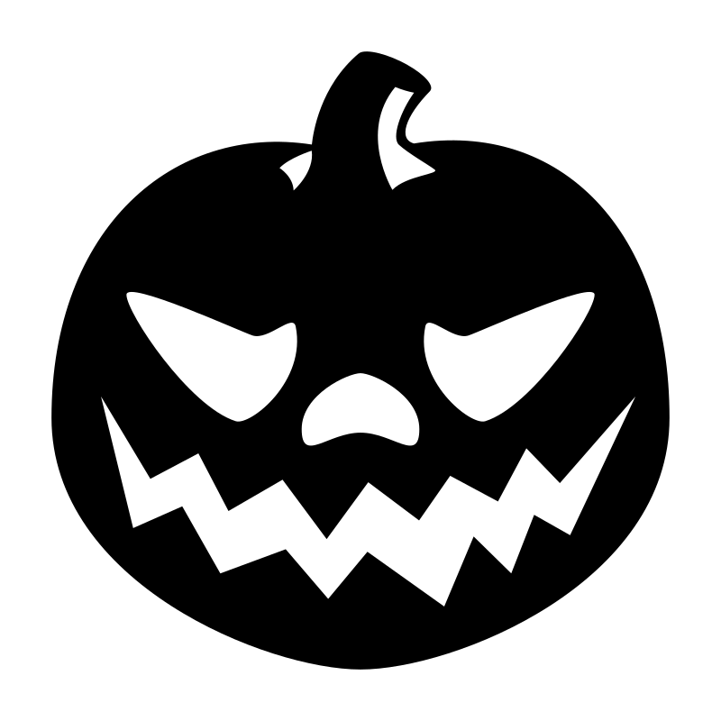
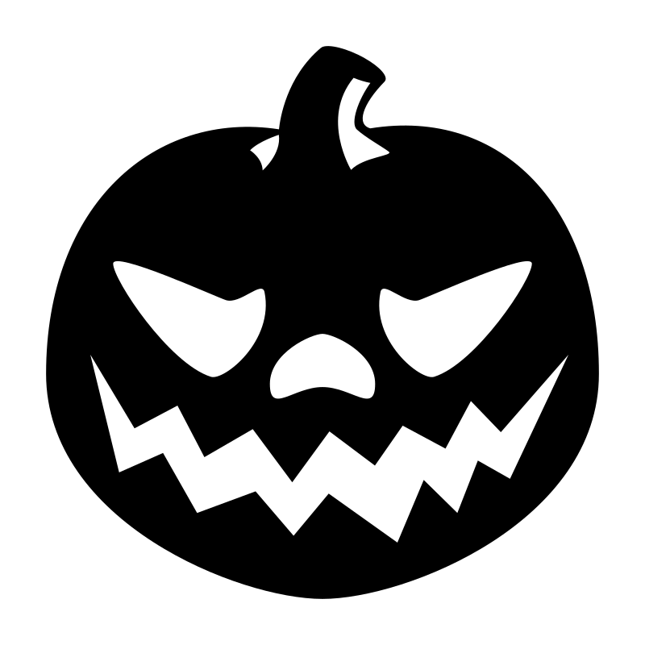

Kl. 8:30:
Lav den klammeste drinks
Lav den klammeste drinks Vi har en række ingredienser, der tilsammen kan skabe den klammeste eller mest markabre drink. Du finder blandt andet isterningeøjne, vingummiorme og frugtfarve.

Kl. 10:00:
Græskarkastekongen
På en 50 m bane, skal du forsøge at kaste et græskar så langt du kan. Der hvor dit græskar lander, noteres af vores kyndige dommere (Oliver). Vi kårer året af græskarkastekonge sidst på dagen

Kl. 11:00
Årets græskarhoved
Vi kårer igen i år det flotteste græskarhoved, så grib et græskar og lav dit eget design. Så er du med i konkurrencen om gratis mad i kantinen hele uge 45. Vi vurderer kreativiteten i forhold til hvordan du bruger former, figurer og lyseffekter i dit græskardesign.

Kl. 8:30:
Lav den klammeste drinks
Lav den klammeste drinks Vi har en række ingredienser, der tilsammen kan skabe den klammeste eller mest markabre drink. Du finder blandt andet isterningeøjne, vingummiorme og frugtfarve.
Kl. 12:30
Lav din egen græskarjuice
Vi har samlet en række ingredienser, hvor du i samarbejde med elever fra Gastronomiuddannelsen, kan skabe din egen græskarjuice
Kl. 13:30:
Eventkåringer
- Årets Græskarkastekonge
- Årets græskarhoved